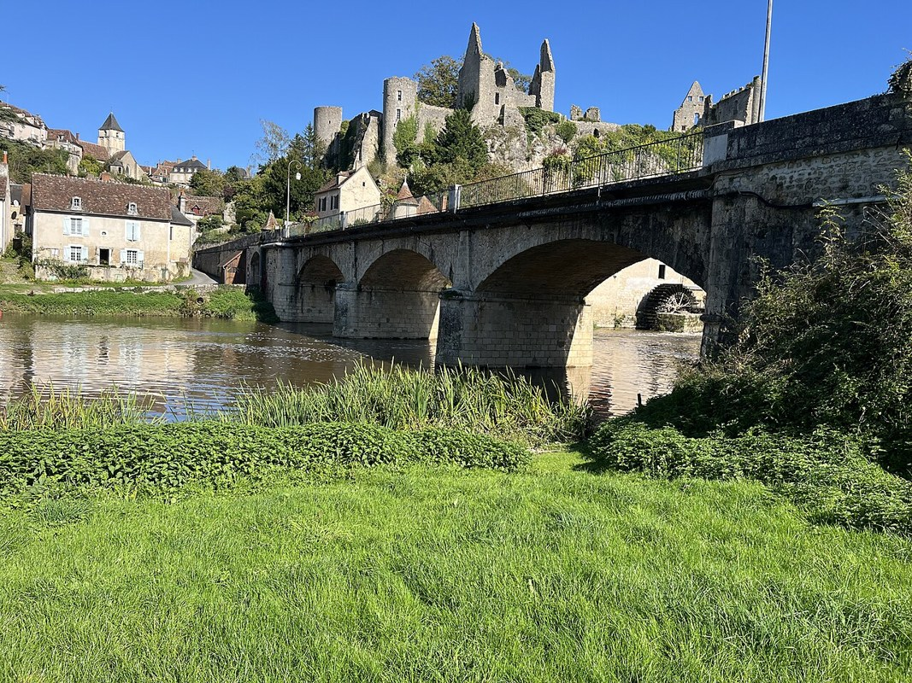

ENDLESS EARTH · MISSION 22.1
Un monde plus continu.
Une nuit à parcourir.
Comparaisons réelles du moteur, films natifs et résultats de validation. La base est la Mission 22 fusionnée par la PR #31. Les images du propriétaire orientent le diagnostic ; leurs positions exactes ne sont pas revendiquées.
Même caméra, avant et après

 Mission 22Mission 22.1
Mission 22Mission 22.1Positions, conditions et contrôle de caméra
Ce que fait le véritable moteur
Les activités rares sont des admissions déterministes sur les itinéraires du pilote. Elles utilisent le directeur, les appuis, l’animation et l’AudioContext réels. Elles sont séparées de la promenade ordinaire ; aucun film n’est une animation précalculée ou une bande-son ajoutée.
Pont : marche et retour en courseQuai : contrôle natif complémentaire de riveFamille : installation, pique-nique, retour et repriseAssise individuelle complèteCouple : activité et retourRencontre proche · adulteRencontre proche · seniorRencontre proche · enfantRencontre proche · amisFaçade 1 · beforeFaçade 1 · afterFaçade 2 · beforeFaçade 2 · afterFaçade 3 · beforeFaçade 3 · afterPromenade ordinaire · openingPromenade ordinaire · nightPromenade ordinaire · stormContrôles tactiles dans ChromiumChien qui renifleConversation distanteConversation derrière un bâtimentPassant procheVillage nocturne calme
Performances appariées
Chromium / SwiftShader, rendu logiciel, 480 × 320. Les personnes, leurs tenues, la caméra, le ciel et les champs d’éclairage sont appariés. Valeurs médianes en millisecondes, pose et rendu synchronisé compris. Les distributions et P95 restent dans les données.
Ces mesures ne certifient pas un GPU physique ou Android. Les mesures initiales et le cas Éco répété sont conservés ; elles ont guidé le niveau de détail des raccords d’articulations.
Ce qui est observé, reconstruit ou encore limité
IGN LiDAR HD / MNT et OSM restent les sources géographiques. Le tablier conserve son axe et ses altitudes centrales ; la section transversale et le raccord de chaussée restent des reconstructions documentées. Le MNT n’est pas aplani. L’assise est au sol au jardin communal documenté par l’Office de tourisme ; aucun banc ou passage dans une façade n’est inventé.
Les personnages et leurs accessoires restent stylisés. Les entrées de bâtiments ne sont pas activées. Le repos public en fin de routine nocturne reste une limite. Les photographies accessibles ne sont pas traitées comme des relevés métriques.

Photographie documentaire, Floppy36 — Wikimedia Commons, CC BY-SA 4.0. Réduction déjà archivée en Mission 14, aucune métrique précise déduite de la photo.0 € supplémentaire · aucune fusion · aucun déploiement · Living Paintings / LP-01 inchangé.